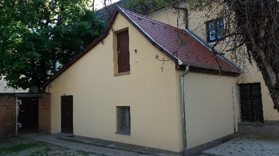

- Bemutatkozás
- Történet
- Lelki élet
- Szeráfi Kórus
- Felvételi jelentkezés
- Galéria
- Dokumentumok
- Kapcsolat
- Pályázat
- 1%


Köszöntjük a Collegium Seraphicum honlapján!
Kollégiumunk 1990-ben az országban elsőként nyitotta meg kapuit az  egyházi felsőoktatási kollégiumok közül. Jelenleg közel száz keresztény egyetemista fiatalnak ad otthont 39 szobában, melyek kettő-, három személyesek. Intézményünk biztosítja a nyugodt tanulás, a hitbeli gyarapodás valamint a szabadidő kultúrált eltöltésének feltételeit. A kollégium épülete a város központjához közel, a történelmi belváros szélén helyezkedik el, ahonnan könnyen elérhetőek a PTE oktatási épületei. A lakók rendelkezésére áll ápolna, mely a nap huszonnégy órájában nyitva van bárki előtt. A lakók életét könyvtár, tanuló, társalgók, audiovizuális eszközökkel felszerelt tanterem, klub szoba ping-pong asztallal, belső zárt udvar és kerékpártároló segíti.
egyházi felsőoktatási kollégiumok közül. Jelenleg közel száz keresztény egyetemista fiatalnak ad otthont 39 szobában, melyek kettő-, három személyesek. Intézményünk biztosítja a nyugodt tanulás, a hitbeli gyarapodás valamint a szabadidő kultúrált eltöltésének feltételeit. A kollégium épülete a város központjához közel, a történelmi belváros szélén helyezkedik el, ahonnan könnyen elérhetőek a PTE oktatási épületei. A lakók rendelkezésére áll ápolna, mely a nap huszonnégy órájában nyitva van bárki előtt. A lakók életét könyvtár, tanuló, társalgók, audiovizuális eszközökkel felszerelt tanterem, klub szoba ping-pong asztallal, belső zárt udvar és kerékpártároló segíti.
Keddenként FerencEstekre várja a pécsi Collegium Seraphicum az egyetemistákat
Állandó programjaink
A tanévet ünnepélyes tanévnyitó szentmisével (Veni Sancte) kezdjük. Év elején játékos ismerkedési estet szervezünk, hogy megismerjük egymást és az újonnan érkezőknek minél könnyebb legyen a beilleszkedés. Közösen ünnepeljük rendalapítónk Szent Ferenc ünnepét, valamint az egyházi év nagyobb ünnepeit. A tanévet ünnepélyes tanévzáró szentmisével (Te Deum) fejezzük be.
Félévente lelki napokat szervezünk. Hallgatóink többsége tagja a városban működő keresztény közösségek valamelyikének.
Felvételi
A Collegium Seraphicum azoknak az egyetemista és főiskolás fiataloknak biztosítja a kollégiumi elhelyezést, akik tanulmányaikat valamelyik pécsi felsőoktatási intézmény nappali tagozatán végzik. A kollégiumi felvétel egy tanévre szól, amit a következő tanévre újból kérelmezni kell.
Elsősorban az egyházi fenntartású középiskolákban végzett diákok, leendő egyetemisták jelentkezését várjuk, olyan hallgatókét, akik hitüket élni, vallásukat gyakorolni akarják és a kollégiumi közösségnek építő tagjai szeretnének lenni. A szükséges információk megtalálhatók a dokumentumok menüpont alatt.
A Kapisztrán Szent Jánosról nevezett Ferences Rendtartomány a pécsi rendházban 1930-ban  hozta létre a Collegium Seraphicumot azzal a céllal, hogy a leendő rendi növendékek középiskolai tanulmányaik alatt már élni tudják a ferences szerzetesi életet.
hozta létre a Collegium Seraphicumot azzal a céllal, hogy a leendő rendi növendékek középiskolai tanulmányaik alatt már élni tudják a ferences szerzetesi életet.
Kollégiumunk 1990-ben az országban elsőként nyitotta meg kapuit az egyházi felsőoktatási kollégiumok közül. Ez évtől kezdődően – Dr. Vass László ferences confrater kezdeményezésére – Mayer Mihály pécsi megyéspüspök újraindította a kollégium életét, hogy abban a Pécsett tanuló, katolikus fiatalok még jobban megélhessék hitvalló életüket. A kollégium tízéves fennálásáról az Új Ember is beszámolt.
A Ferences Rendtartomány 1998. január 1-jétől vette át az egyházmegyétől a kollégium fenntartását.
Rajmund atya megáldotta a Kollégiumot és lakóit. A Tanteremből indultunk, és végigmentünk a közös helyiségeken és az egyes szobákon is. Még egy fogorvosi tanulmányokat szolgáló koponya és egy Dávid-fej alakú virágcserép is megáldatott a jobb közérzet érdekében, és a végére a segédeink is megtanulták, hogy a 20+C+M+B+24 felirat nem a három királyt jelöli, hanem a "Christus Mansionem Benedicat" (Krisztus áldja meg a hajlékunkat) rövidítése. Kapcsolódó galéria
Szentmisék a Kápolnában alkalmankén, az előre meghirdetett időpontban 
Veni Sancte, Te Deum a Ferences templomban,
Ferences hittan heti rendszerességgel,
Havonta gyóntatás, lelki vezetés a ferences atyák segítségével,
Lelki napok az adventi és nagyböjti időszakban.
 1929. december 8-án Agócsy László 50 dalostárssal megalapítja a pécsi Ferences templom Szeráfi Kórusát, mely rövid idő leforgása alatt a hazai egyházi énekkarok élvonalába emelkedik. Beszédesen bizonyítják ezt a koncert- és rádiószereplések, neves komponistáknak az énekkar számára írt művei, Kodály Zoltán, Bárdos Lajos és más prominens személyiségek biztatása, támogatása, rangos díjak hosszú sorozata.
1929. december 8-án Agócsy László 50 dalostárssal megalapítja a pécsi Ferences templom Szeráfi Kórusát, mely rövid idő leforgása alatt a hazai egyházi énekkarok élvonalába emelkedik. Beszédesen bizonyítják ezt a koncert- és rádiószereplések, neves komponistáknak az énekkar számára írt művei, Kodály Zoltán, Bárdos Lajos és más prominens személyiségek biztatása, támogatása, rangos díjak hosszú sorozata.
A kórustagok betanítását olyan kiváló orgonisták segítették, mint Horváth Mihály, Laky György, Sass Dezső, Szentkereszti Elemér. Évente visszatérő programjuk volt a Cecília napon adott hangverseny a ferenceseknél, vagy a székesegyházban. Műsorukon egyházi énekek, gregorián dallamok, motetták, klasszikus és romantikus kórusművek szerepeltek. Nevezetes hangversenyeik közül meg kell említeni a Pécsi Ünnepi Játékokon való szerepléseiket, de az ország számos más rendezvényein is felléptek. A Ferences templom liturgikus szolgálatában álltak egészen 1949-ig, majd a kommunista diktatúra nyomására az 50-es évek elején a kórus megszűnt.
1999-ben Vass László atya kezdeményezésére Nagy Ernő karnagy felébresztette a kórus hagyományait, s azóta a Collegium Seraphicum és a Ferences templom támogatásával egyre eredményesebben működnek. Részt vesznek a templomi szolgálatban, a kollégium és a város egyházi és világi rendezvényein. Repertoárjuk egyre színesedik, gregoriánok, misék, motetták mellett világi műveket is énekelnek. A kórus létszáma 25 és 30 fő között változik, Nagy Ernő egykori diákjai mellett elsősorban egyetemisták, fiatal dolgozó felnőttek alkotják. Azóta Pécs városának világi és egyházi jellegű eseményein lépnek fel rendszeresen; több bel- és külföldi meghívásnak tettek eleget, és több CD-lemezt adtak ki.
A 2023/24-es tanévre a kollégiumi jelentkezéseket
még augusztus folyamán is várjuk.
Az augusztus második felében jelentkezők
a fennmaradó férőhelyekre elektronikus úton
(seraphicum.collegium@ferencesek.hu) pályázhatnak.
Költségtérítéses (nem államilag támogatott) képzés esetén
a kollégiumi díj az aktuális állami normatíva mértékével emelkedik!
A kollégiumi díj havonta 35.000 Ft,
a költségtérítéses hallgatók részére pedig 47.000 Ft,
mely a fenntartási költségek változásával emelkedhet.
A felvételről / elutasításról szóló értesítést
augusztus végéig folyamatosan küldjük ki
a jelentkező által (a jelentkezési lapon) megadott e-mail címre.
A kollégium házirendje.
A kollégium Adatkezelési tájékoztatója.
A jelentkezéshez szükséges dokumentumok, igazolások:
a kollégiumi díj az aktuális állami normatíva mértékével emelkedik!
a költségtérítéses hallgatók részére pedig 47.000 Ft,
mely a fenntartási költségek változásával emelkedhet.
augusztus végéig folyamatosan küldjük ki
a jelentkező által (a jelentkezési lapon) megadott e-mail címre.
Régi hallgatók
|
Új jelentkezők
|
Kedves Barátaink!
A kollégium fenntartása jelentős anyagi terhet ró a Magyarok Nagyasszonya Ferences Rendtartományra. A rend számos intézményének működtetése erőn felüli anyagi teherrel jár, ezért a Collegium Seraphicum a Fenntartó segítségével egy támogatási felületet hozott létre azok számára, akik úgy érzik, szívesen járulnának hozzá intézményünk fenntartásához.
Kollégiumunkat támogatni a Ferences Alapítványon keresztül lehet, a
www.ferencesalapitvany.hu
oldalon a „Gyűjtés” fül alatt
a „Pécsi Ferences Collegium Seraphicum Támogatása” vagy az „Online Adományozás”-ra
kattintva majd ott a kollégiumot kiválasztva.
Közvetlen elérés:
https://www.ferencesalapitvany.hu/projekt/a-pecsi-ferences-collegium-seraphicum-tamogatasa/11
Támogatásukat köszönjük!
Collegium Seraphicum
Adójuk 1%-ával továbbra is támogathatják a Ferences Alapítvány működését
és a ferencesek által támogatott, működtetett programokat.
Adószáma: 18209778-1-41
Hálásan köszönünk minden adományt!
Ferences Alapítvány
Ízelítőül néhány kép kollégiumunkról és régebbi lelkigyakorlatunkról. Az aktuális képeket a Facebook oldalunkon lehet megtekinteni. A linkek új ablakban nyílnak meg.
Collegium Seraphicum7621 Pécs, Ferencesek utcája 35. Levélcím: 7601 Pécs, Pf. 359 |
Collegium Seraphicum nagyobb térképen való megjelenítése |
2021. június
Elkészült a pécsi ferences kolostorban működő Collegium Seraphicum
tetőfelújítás V. üteme
Az egykori ferences kolostor épülete 1720-1760 között épült. A ma működő kollégium épületét, jószerével öt ütemben, negyven év alatt építették fel a ferences szerzetesek. A jelen ütemben, a pécsi Collegium Seraphicum teljes tetőfelújításának V. ütemében az épület keleti szárnyának keleti toldaléképületének tetőszerkezete újult meg.
A keleti szárny keleti irányú meghosszabbítására földszintjén az áthelyezett posztóműhellyel, emeletén a könyvtárral 1769-ben került sor. Az épületszárny faszerkezetét valószínűleg egy korábban elbontott épület faanyagából készítették, mivel több helyen is látszanak régebbi kivágások, csapolások nyomai.
A ferences szerzetesek pécsi működését megszüntető 1950-es állami intézkedést követő – hajdani ferences kolostor vegyes használata után - az 1970-es évektől turista szállóként történő üzemeltetés idején, a tetőt helyenként felújították, ami a héjalás cseréjét, javítását jelentette. Az 1990-es évek elején visszakerült a Ferences Rendhez az épület, és újra nyitott a Collegium Seraphicum. Ezalatt az időszak alatt, csak a tető kisebb javításaira került sor, de az épület állapota miatt ma már halaszthatatlanná vált a hibák gyökeres orvoslása és a tető teljes felújítása. A K-i szárny K-i oldalának meghosszabbításából megmaradt toldalék épület, melynek tetőszerkezete igen rossz állapotú volt, rendszeresen beázott, felújításra került.
Az épület tetőfelújításának több mint 70%-a már elkészült. A még fel nem újított majd száz méter hosszú keleti szárny déli végének felújítását a VI. ütemben tovább szeretnénk folytatni, ahogy a pályázati források lehetővé teszik. A felújítás V. üteme 7.000.013 forintba került, amelynek forrása a Magyar Kormány támogatásával, az Egyházi és Nemzetiségi Kapcsolatokért Felelős Államtitkárság EGYH-EOR-20-0076 számú nyertes pályázata keretében elnyert 7 millió forintból, a Bethlen Gábor Alapkezelő Zrt. közreműködésével és a fenntartó támogatásával valósult meg. Kivitelező a PÉCSI ÉPÍTŐ ÉS TATAROZÓ ZRT. volt. A korábbi felújítási ütemekben a kolostor belső udvarát – a kvadrumot – körbezáró épületszárnyak tetőfelújítása és az épület teljes villámvédelme elkészült. E munka eredményeként Pécs város látképében is meghatározó értékű épületegyüttes felújítása tovább őrzi a város történelmi múltjának kiemelt értékét.
VP
2019. június
Elkészült a pécsi ferences kolostorban működő Collegium Seraphicum
tetőfelújítás IV. üteme
Az egykori ferences kolostor épülete 1720-1760 között épült. A ma működő kollégium épületét, jószerével öt ütemben, negyven év alatt építették föl a ferences szerzetesek. A jelen ütemben, a pécsi Collegium Seraphicum teljes tetőfelújításának IV. ütemében az épület villámvédelme valósult meg.

A villamoshálózat 1911 utáni kiépítése, még viszonylag kevés villámcsapási eshetőséget indukált, még a második világháborút követő években is. A ferences szerzetesek pécsi működését megszüntető 1950-es állami intézkedést követő – hajdani ferences kolostor vegyes használata után - az 1970-es évektől turista szállóként történő üzemeltetés idején, először, csupán a templomtorony villámvédelmének kiépítésére került sor. Ez is csak egyetlen levezetővel.
A villámhárító rendszer kiépítéséig, a tetőfelújítás 70%-a már elkészült. A kollégiumban lakó diákok használatában lévő gyengeáramú rendszere, így a szerverhez kötött számítógépes hálózat, valamint a tetőtéri kazánt-működtető elektronikai hálózatának védelme, valamint a felújított – teljes egészében műemléki védelem alatt álló - vörösfenyő tetőszerkezet villámcsapás okoztat tetőtűz megelőzése, az utóbbi évek orkánszerű viharai miatt fokozottan előálló veszélyhelyzete, ma ezt a legsürgetőbb feladatként határozta meg.
 A felújítás IV. üteme 11,7 millió forintba került, amelynek forrása a Magyar Kormány támogatásával, az Egyházi és Nemzetiségi Kapcsolatokért Felelős Államtitkárság EGYH-EOR-18-0694 számú nyertes pályázata keretében elnyert 10 millió forintból, a Bethlen Gábor Alapkezelő Zrt. közreműködésével és a fenntartó 1,7 millió forintos támogatásából valósult meg.
A kollégium – az egykori ferences kolostor – és a templom egyetlen építészeti együttest alkot, és egyetlen villámvédelmi rendszer. A pécsi püspökség tulajdonában álló templom villámvédelmi rendszerét a püspökség finanszírozta és a kollégium valamint a templom villámvédelmi rendszere együttesen jött létre. A templomban a villamos energia igénybevételével működő orgona vezeték-hálózatának védelmét is meg kellett oldani a püspökséget terhelve.
A felújítás IV. üteme 11,7 millió forintba került, amelynek forrása a Magyar Kormány támogatásával, az Egyházi és Nemzetiségi Kapcsolatokért Felelős Államtitkárság EGYH-EOR-18-0694 számú nyertes pályázata keretében elnyert 10 millió forintból, a Bethlen Gábor Alapkezelő Zrt. közreműködésével és a fenntartó 1,7 millió forintos támogatásából valósult meg.
A kollégium – az egykori ferences kolostor – és a templom egyetlen építészeti együttest alkot, és egyetlen villámvédelmi rendszer. A pécsi püspökség tulajdonában álló templom villámvédelmi rendszerét a püspökség finanszírozta és a kollégium valamint a templom villámvédelmi rendszere együttesen jött létre. A templomban a villamos energia igénybevételével működő orgona vezeték-hálózatának védelmét is meg kellett oldani a püspökséget terhelve.

Az épületegyütteshez 29 ponton (helyen) készült „A” típusú földelő. A levezetők szabvány szerinti elhelyezését kellett figyelembe venni. Ahol lehetett, ott az épület sarkokban, az esővíz levezető csatorna takarásába telepítve, kevésbé zavarja a műemlék-épület homlokzatát, látványát.
A 28/2011.(IX.6.) BM. rendelettel kiadott Országos Tűzvédelmi Szabályzat (OTSZ) szerint, 50 főt befogadó képesség felett, LPS III. fokozatú villámvédelmi rendszerrel kell létesíteni, ami a telepített rendszer teljesít.
A majd száz méter hosszú szárny déli végén még ezt követően kell majd, a tetőszerkezet felújítását, új cserépfedését elkészíteni az V. ütemben. A korábbi felújítási ütemekben a kolostor belső udvarát – a kvadrumot – körbezáró épületszárnyak tetőfelújítása elkészült. E munka eredményeként Pécs város látképében is meghatározó értékű épületegyüttes felújítása tovább őrzi a város történelmi múltjának kiemelt értékét.
HI
 |
 |
2018. július 27.
Elkészült a pécsi ferences kolostorban működő Collegium Seraphicum
tetőfelújítás III. üteme
Az egykori ferences kolostor – ma a Collegium Seraphicum – épülete 1720-1760 között eltelt 40 év alatt valósult meg. 1686. október elsején Pécs városát – 143 évi török rabságot követően – a keresztény seregek a törököktől visszafoglalták. 1700 nyarán a ferences szerzetesek visszatelepedtek török imahelyet keresztény templommá visszaalakítva. Majd neki láttak – kolduló rend módjára, az építés feltételeit összekoldulva – kolostoruk megépítéséhez. A történelem szinte ismétli önmagát, ahogy a barokk kori tetőszerkezet megújítására vállalkozott a ferences rend. A ma működő kollégium épületét, jószerével öt ütemben, negyven év alatt építetté föl a ferences szerzetesek. A jelen ütemben, a pécsi Collegium Seraphicum teljes tetőfelújításának III. ütemében, az É-D-i irányban húzódó, közel 100 méter hosszú, 1720-1760 között három ütemben létesült épületszárny, valamint a belső udvar déli oldalán, 1732-1739 között épült épületszárny csatlakozásának legösszetettebb tetőszakasz felújítása valósult meg. A felújítás III. üteme közel 25 millió forintba került, amelynek forrása az EMMI 10 millió forintos (EGYH-EOR-17-EPER-0263) és a fenntartó 15 millió forintos támogatása. 1900-ig teljesen fűtetlen kolostori cellákban ma működő kollégiumi szobák központi fűtését biztosító tetőtéri kazánok épp ebben a tetőrészben vannak, így a fölötte lévő tetőszakasz bonyolultabb feladatot jelentett, mint ott, ahol az üres padlástérben kötetlenebb munkaterületen folyhatott a felújítás. A közel háromszáz év elteltével, ma az épület használat új követelményeit kell biztosítani, így például számítógépes hálózat nélkülözhetetlen az egyetemi hallgatók életében, de a modern kor követelménye a villámvédelem kiépítése is megoldásra vár. Most, hogy a tetőfelújítás négyötöd része már elkészült, köteles gondossággal kell védeni a természeti csapások ellen is az épületet.

A majd száz méter hosszú szárny déli végén még ezt követően kell majd, a tetőszerkezet felújítását, új cserépfedését elkészíteni az V. ütemben. Az egyre szélsőségesebb viharok villámkárai arra figyelmeztetnek, hogy a soron következő ütemben ezt a védelmet kell megvalósítani. A korábbi felújítási ütemekben a kolostor belső udvarát – a kvadrumot – körbezáró épületszárnyak tetőfelújítása is elkészült, így a villámvédelem – a pécsi püspökség Szent Ferenc Plébánia templom tornyával és a templom tetőzetével egy épületkomplexumot alkotó (volt kolostor) kollégium épületegyüttes védelmi rendszerét – költségmegosztás szerinti – kell soron következő feladatként megvalósítani. E munka eredményeként Pécs város látképében is meghatározó értékű épületegyüttes felújítása tovább őrzi a város történelmi múltjának kiemelt értékét. Nem feledve azt, hogy a ferencesek itt már – közvetlenül a tatár-dúlás után - 1248-ban megtelepedtek és építették meg a Provincia Hungariae nyolc kusztódiája sorában ötödikként a pécsi kolostor, majd 1301-ben – ma alapfalaiban a templom előtt látható – ősi templomot. A hajdani fiatal ferences szerzetes kollégiumát – a Collegium Seraphicumot – nevében őrzi a mai egyetemi és főiskolai kollégium.
HI

támogatásával valósul meg
a
PÉCS COLLEGIUM SERAPHICUM
Egyetemi és Főiskolai Kollégium
tetőszerkezetének felújítása.
2017.
Egyházi épített örökség támogatása, EGYH-EOR-17-EPER-0263.
Építtető:
COLLEGIUM SERAPHICUM
Egyetemi és Főiskolai Kollégium
Kivitelező:
Pécsi Építő és Tatarozó Zrt.
7621 Pécs, Tímár u. 23.
Felelős műszaki vezető:
Wéber Árpád
MV-Ép/AM-MÉK-02-01383
2015. november 27.
A Collegium Seraphicum Egyetemi és Főiskolai Kollégium
Épületenergetikai Fejlesztése
Kedvezményezett neve: Magyarok Nagyasszonya Ferences Rendtartomány
Projekt címe: A Collegium Seraphicum Egyetemi és Főiskolai Kollégium épületenergetikai fejlesztése
Támogatás összege: 62 955 450 Ft
A támogatás mértéke: 100%
A projekt kódszáma: KEOP-5.7.0/15-2015-0208
A KEOP-2015-5.7.0 kódszámú, „Középületek kiemelt jelentőségű épületenergetikai fejlesztése” című pályázati kiíráshoz igazodva lehetőség nyílt a Rendtartomány épületeinek felújítására.
A Magyarok Nagyasszonya Ferences Rendtartomány célul tűzte ki, hogy a fenntartásában lévő épületeit az energiahatékonyság optimalizálása érdekében a kor követelményeinek megfelelően felújítsa, ezzel is csökkentve az üzemeltetési költségeket. A Collegium Seraphicum fejlesztése az épületenergetikai korszerűsítésére irányul, elsősorban nyílászáró cserét és szigetelési munkálatokat takar. Az épület műemléki védettség alatt áll.
 A tárgyi épületenergetikai fejlesztés keretében az épület külső nyílászáróinak energia-megtakarítást eredményező cseréje valósul meg 259,5 m2-en, valamint a padlásfödém hőszigetelése 1780 m2-en.
A tárgyi épületenergetikai fejlesztés keretében az épület külső nyílászáróinak energia-megtakarítást eredményező cseréje valósul meg 259,5 m2-en, valamint a padlásfödém hőszigetelése 1780 m2-en.
A projekt célja, hogy a fenntartási költségek csökkenthetőek legyenek, valamint az üzemeltetés feltételei hatékonyabbá váljanak. A kivitelezés gyors, egyidejű végrehajtására elengedhetetlenül szükség van, mivel a projektben résztvevő épület oktatási tevékenységet lát el.
A beruházás tervezett befejezése: 2015. november 30.
2015. április 8.
Megújult a pécsi kolostor tetőszerkezetének egy része
 Pécs egyik nevezetes barokk épületegyüttese a Ferences templom és kolostor, amely – mint minden műemlék –, folyamatos felújításra szorul. Most az Emberi Erőforrás Támogatáskezelő Egyházi és Nemzetiségi Támogatások Igazgatósága, a Pécsi Püspökség és a Ferences Rendtartomány anyagi segítségével a rendház tetőszerkezetének egy része született újjá. A kolostor jelenleg Collegium Seraphicum néven száz Pécsett tanuló egyetemista otthona.
Pécs egyik nevezetes barokk épületegyüttese a Ferences templom és kolostor, amely – mint minden műemlék –, folyamatos felújításra szorul. Most az Emberi Erőforrás Támogatáskezelő Egyházi és Nemzetiségi Támogatások Igazgatósága, a Pécsi Püspökség és a Ferences Rendtartomány anyagi segítségével a rendház tetőszerkezetének egy része született újjá. A kolostor jelenleg Collegium Seraphicum néven száz Pécsett tanuló egyetemista otthona.
 A közel 300 éves, vörösfenyőből épített ácsszerkezet egyes elemeit az idő vasfoga tönkre tette. Esővíz okozta beázások helyein korhadás, a faszerkezetet károsító gombák, rovarok az egyes szerkezeti elemek cseréjét követelte. Közel 50 köbméter új vörösfenyő beépítésére került sor. Sok helyen az ács-szekerce „bárdolása” segítette eltávolítani a beteg részeket. A hajdani ácsmesterek hozzáértésével készült remekmű műemléki védelem alatt áll. Abban az időben nem használtak sem szeget, sem fém kapcsokat, csupán kovácsoltvas pántokkal függesztették föl az oszlopokat, hogy tehermentesítsék a tíz méter hosszat is meghaladó, kétaraszos keresztmetszetű gerendákat. Keményfa csapokkal rögzítették a fa-kötéseket, csapolásokat.
A közel 300 éves, vörösfenyőből épített ácsszerkezet egyes elemeit az idő vasfoga tönkre tette. Esővíz okozta beázások helyein korhadás, a faszerkezetet károsító gombák, rovarok az egyes szerkezeti elemek cseréjét követelte. Közel 50 köbméter új vörösfenyő beépítésére került sor. Sok helyen az ács-szekerce „bárdolása” segítette eltávolítani a beteg részeket. A hajdani ácsmesterek hozzáértésével készült remekmű műemléki védelem alatt áll. Abban az időben nem használtak sem szeget, sem fém kapcsokat, csupán kovácsoltvas pántokkal függesztették föl az oszlopokat, hogy tehermentesítsék a tíz méter hosszat is meghaladó, kétaraszos keresztmetszetű gerendákat. Keményfa csapokkal rögzítették a fa-kötéseket, csapolásokat.
 A régi, tönkrement öreg cserepeket új, hódfarkú cserépre cserélték. Az 1500 nm tető-felületen, közel 50 ezer cserepet építettek be. Az ötvözött, előpatinázott horganylemez ereszcsatorna és egyéb fémszerkezet tartós megoldást biztosít. Visszaállították a hajdani terménybeadót, megőrizték a barokk kori kéményeket, gondosan megóvták – ahol csak lehetett – a hajdani ácsmesterek alkotását, keze munkáját.
A régi, tönkrement öreg cserepeket új, hódfarkú cserépre cserélték. Az 1500 nm tető-felületen, közel 50 ezer cserepet építettek be. Az ötvözött, előpatinázott horganylemez ereszcsatorna és egyéb fémszerkezet tartós megoldást biztosít. Visszaállították a hajdani terménybeadót, megőrizték a barokk kori kéményeket, gondosan megóvták – ahol csak lehetett – a hajdani ácsmesterek alkotását, keze munkáját.
 A tetőfelújítás az Emberi Erőforrás Támogatáskezelő Egyházi és Nemzetiségi Támogatások Igazgatósága, a Pécsi Püspökség és a Magyarok Nagyasszonya Ferences Rendtartomány anyagi támogatásával, a Pécsi Építő és Tatarozó Zrt. valamint a TAKESZ Ács, Állványozó Kft., a Stang Bádogos Kft., a Dachmeister és a VETU Kft. közreműködésével készült. Az építésztervező Kauser Tibor, a statikus- és faanyagvédelmi tervező Rabb Péter, a Kormányhivatal műemléki felügyelője Bogosné Goldfinger Zita. Műszaki ellenőr: Harsányi István, a ferences rendtartomány főépítésze. A teljes épületegyüttes tetőszerkezetének 40%-a készült el, anyagi fedezet hiányában a folytatás, a teljes tető felújításának befejezése, még várat magára.
A tetőfelújítás az Emberi Erőforrás Támogatáskezelő Egyházi és Nemzetiségi Támogatások Igazgatósága, a Pécsi Püspökség és a Magyarok Nagyasszonya Ferences Rendtartomány anyagi támogatásával, a Pécsi Építő és Tatarozó Zrt. valamint a TAKESZ Ács, Állványozó Kft., a Stang Bádogos Kft., a Dachmeister és a VETU Kft. közreműködésével készült. Az építésztervező Kauser Tibor, a statikus- és faanyagvédelmi tervező Rabb Péter, a Kormányhivatal műemléki felügyelője Bogosné Goldfinger Zita. Műszaki ellenőr: Harsányi István, a ferences rendtartomány főépítésze. A teljes épületegyüttes tetőszerkezetének 40%-a készült el, anyagi fedezet hiányában a folytatás, a teljes tető felújításának befejezése, még várat magára.

Amennyiben szeretne minket támogatni adója 1%-val, azt a következő módon teheti:
Az https://eszja.nav.gov.hu/app/#form oldalon a kövezkező adatokat kell megadni:
Név, cím, email és az Alapítvány adószáma (Ferences Alapítvány 18209778-1-41).
Azért kell a nevet, címet, e-mail címet is megadni, hogy visszakereshető legyen és így a Ferences Alapítványon belül lekérhessük a Kollégium számára.
Amennyiben mindezt megtette, kérem, még írja meg nekem a nevét a seraphicum.collegium@ferencesek.hu címre, hogy a ferences központ felé jelezni tudjam, és így az Ön 1 %-a valóban a kollégiumhoz kerüljön.
Köszönjük támogatását.